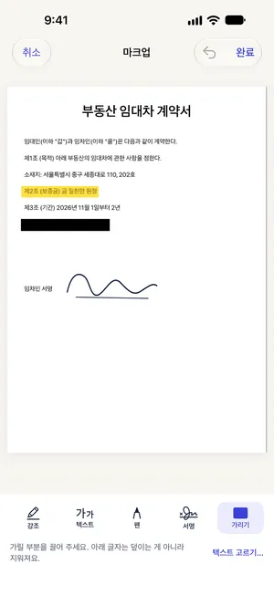

아이폰에서 PDF 계약서에 서명하는 방법 (프린트 없이)
최종 수정 2026-10-22 · Paperkeep Pro 기능
메일로 받은 계약서에 서명만 해서 돌려보내면 될 때, 프린트하고 다시 스캔할 필요는 없어요. Paperkeep Pro의 '서명' 도구는 한 번 그려 둔 서명을 서명란으로 끌어다 놓게 해 줘요. 서명 이미지는 다음 계약을 위해 이 iPhone의 키체인에만 보관돼요.
먼저, iOS 기본 기능으로 하는 방법
- 메일에 첨부된 PDF를 파일 앱에 저장하고 열어요.
- 오른쪽 위 마크업(펜촉 모양) 버튼을 누른 뒤 '+'에서 '서명 추가'를 골라요.
- 손가락으로 서명하고 '완료'를 누르면 페이지에 서명이 들어가요. 크기와 위치를 맞춘 다음 다시 '완료'를 눌러 저장해요.
- 서명은 iOS 기본 기능으로도 충분히 할 수 있어요. 다만 원본 PDF에 바로 덮어 저장되니, 서명 전 상태가 필요하면 먼저 복제해 두세요.
Paperkeep으로 하는 방법
- PDF로 받은 계약서라면 오른쪽 위 '가져오기'(아래쪽 화살표 버튼)에서 '파일에서'를 골라 불러와요. 종이 계약서는 '스캔'으로 찍으면 돼요.
- 목록에서 계약서를 열고 요술봉 모양의 '도구' 버튼을 누른 뒤 '서명'을 골라요.
- 처음이라면 '내 서명' 화면이 열려요. 선 위에 서명하고 '저장'을 누르세요. 다시 쓰고 싶으면 '지우기'를 눌러요.
- 페이지 화살표로 서명할 페이지로 넘어간 뒤, 서명을 서명란까지 끌어 놓아요. 날짜나 이름은 '텍스트' 도구로 탭한 자리에 적을 수 있어요.
- '완료'를 누르고 '도구' → '내보내기…'에서 PDF로 '공유'하면 서명된 계약서를 돌려보낼 수 있어요.

이 문서만의 팁
- 이 방법은 손글씨 서명 이미지를 PDF에 넣는 거예요. 전자계약 서비스처럼 정해진 절차가 있는 계약이라면 상대가 안내한 방식을 따르세요.
- 각 장 아래에 서명이나 이니셜이 필요한 계약서는 페이지마다 '서명'을 다시 누르면 저장된 서명이 그 페이지에 바로 놓여요.
- 서명을 잘못 놓았다면 서명을 탭해 '표시 삭제'를 누르거나 실행 취소 버튼으로 되돌려요.
곧 App Store에 출시돼요.